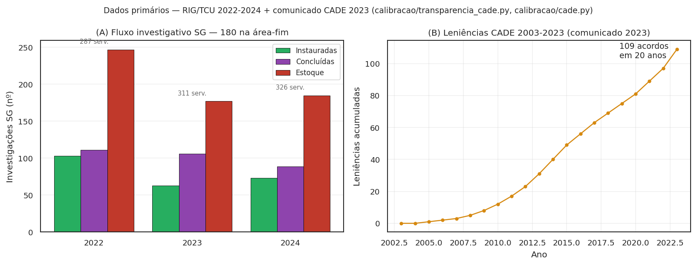
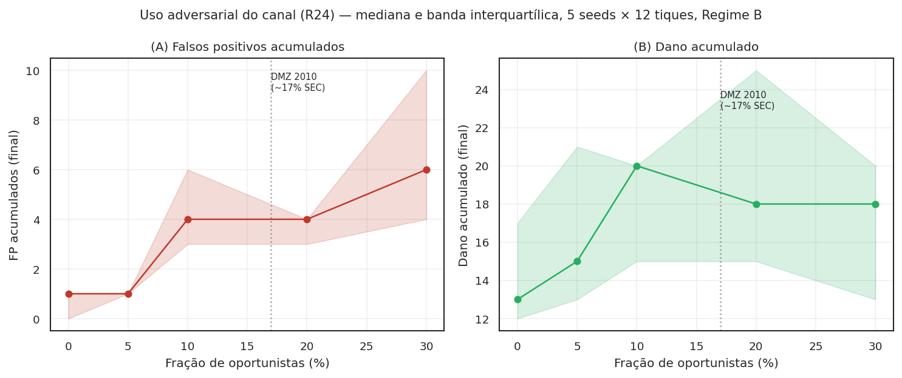

O que ainda não está sustentado¶
Ato 4 de 5 · A honestidade
O reframe não resolve fragilidades — apenas as nomeia melhor; sob a lente Coleman, novas fragilidades aparecem que o framing "empresa paga" ocultava.
O Ato 3 fechou com evidência direcional para o canal de dissuasão. Mas seria desonesto parar aí. Este projeto é um artigo em elaboração, e existem pontos onde a alegação ainda não tem cobertura — alguns por calibração faltando, outros por escolha teórica que precisa de revisão, outros por restrição estrutural do desenho jurídico. Esta página enumera cada um deles e diz, na medida do possível, o que faria a alegação sustentar-se.
A postura é simples: dizer onde o argumento ainda não fecha é mais útil ao leitor do que esconder a dobra. O backlog técnico completo está em Decisões e backlog; o que segue é a versão para humanos.
A fragilidade jurídica do Regime B é a mais séria¶
Esta é a charneira que oito revisores externos — convocados na Crítica x10 — apontaram independentemente, e a que mais muda a leitura do projeto. Vale dizer com todas as letras.
O Regime B implementa o WaaS por resolução do CADE, sem alterar lei. Tem três vetores de fragilidade:
(i) A re-caracterização da recompensa como "ressarcimento" é controvertida. A jurisprudência sobre o Art. 12 da Resolução 21/2018 trata "vítimas" como categoria coletiva (consumidores, concorrentes, erário). O denunciante interno é, dogmaticamente, testemunha qualificada — não a coletividade lesada. Re-caracterizar o pagamento como ressarcimento dessas vítimas é construção finalística, e o Judiciário pode rejeitá-la em sede de controle (falsificador F6 do desenho). O modelo torna isto calibrável via p_anulacao_tcc.
(ii) Resolução do CADE não pode impor cláusula contratual padrão. A camada Hirschman exit-with-equity (R07) supõe cláusulas contratuais de vesting acelerado por gatilho de ação coletiva. Por reserva de lei (Art. 22, I, da Constituição), matéria contratual padrão e proteção trabalhista são competência exclusiva da União por lei — não cabem em resolução infralegal. Logo, R07 só é institucionalmente coerente sob Regime C, e o modelo agora reflete isso: o parâmetro fracao_contratos_acelerados > 0 em Regime A ou B é forçado a 0 com aviso explícito.
(iii) Há colisão com a leniência clássica. Se o denunciante interno for partícipe da conduta — o engenheiro que codificou o algoritmo, o comercial que operou a exclusividade, o growth que instrumentou o dark pattern — o caminho institucional adequado é o Art. 86 (leniência clássica), não o WaaS. O Regime B pode criar arbitragem regulatória entre os dois canais.
A solução estrutural para os três é o Regime C — extensão da Lei 13.608/2018 ao antitruste, via Congresso. Mais robusto, custa voto político. O modelo cobre os dois regimes para deixar a escolha explícita.
Os números ainda não estão calibrados¶
A simulação produz direção e magnitude, mas os parâmetros são plausíveis, não ajustados. Há três bancos de dados externos contra os quais o modelo precisa ser calibrado antes de qualquer alegação quantitativa:
- Saito (2021) — Termo de Compromisso de Cessação na Lei nº 12.529/11, CADE/PNUD. Cobre 349 TCCs em 7,5 anos com mediana de desconto. Calibrar \(D_{\text{base}}\) contra esse universo é o item número um em R03.
- DEE/CADE Documentos de Trabalho 003/2022 e 001/2024 — magnitudes de multa, vazão da autoridade, perfil de capacidade.
- Wiedman & Zhu (2023, CAR) — evidência empírica de redução de fraude após Dodd-Frank §922 nos EUA. Fornece um quarto alvo de calibração via mecanismo análogo (incentivo financeiro ao denunciante interno).
Calibração formal contra esses três alvos está em R03 — a pendência mais importante do backlog.
O que a análise de identificabilidade já mostrou (jun/2026)¶
Antes de otimizar, é preciso saber o que é otimizável. A terceira
rodada de R03 (scripts/identificabilidade_r03.py, 175 rodadas 1D)
decompôs o aparente conflito entre os alvos em três achados:
- Sensibilidade: o volume de TCC/ano responde a
fracao_violadoras(Δ mediana 1,6),taxa_capacidadeek_rel(0,8 cada) — e não responde arho(Δ = 0,000; acurácia afeta precisão, não volume).rhodeve sair da função objetivo de calibração. - O "gap de escala" era artefato de não-normalização: o alvo de 47 TCC/ano é do universo CADE inteiro; o modelo simula 20 firmas. Invertendo a normalização, o modelo seria consistente com um universo de N* ≈ 1.567 firmas sob jurisdição ativa — uma predição falsificável contra o número real (pendência empírica; não estimado aqui para não inventar dado).
- O alvo DMZ (19% de detecção por empregados) é não-identificável por construção: o modelo tem um único canal de detecção (o trabalhador), então a fração interna simulada é ~100% e nenhum parâmetro atual a move para 19%. O alvo mede composição entre canais (auditoria, mídia, concorrentes) que o modelo não representa — ele deve sair da função objetivo até que canais exógenos de detecção sejam modelados.
A consequência prática: a calibração formal de R03 tem um alvo
operacional (volume reescalonado por N*) e dois parâmetros
dominantes (fracao_violadoras, taxa_capacidade) — problema bem
mais tratável do que a forma original com 3 alvos × 3 parâmetros.
A calibração formal, executada (scripts/calibrar_formal.py,
scipy.optimize.minimize(method="Nelder-Mead"), 5 seeds): Nelder-Mead
converge em 8 iterações ao ponto ótimo (0,323; 0,481), produzindo
0,56 TCC/ano simulado (IC bootstrap 95%: [0,200; 0,900]) contra
alvo normalizado 0,60 — erro relativo final de 6,65%. O alvo
está dentro do IC do modelo: a calibração é consistente com os
dados disponíveis dado o N* assumido. O N★ implícito sobe
levemente para 1.679 firmas (vs 1.567 da identificabilidade) —
predição falsificável contra o número real de firmas sob jurisdição
ativa do CADE (pendência empírica). Resultados em
results/calibracao_formal_r03.json.
Os dados primários contra os quais essa calibração corre estão visualizados abaixo (RIG/TCU 2022-2024 + comunicado CADE 2023):

calibracao/transparencia_cade.py. (B) Leniências acumuladas 2003-2023: 109 acordos em 20 anos (comunicado CADE 2023). A vazão real é a âncora do reescalonamento de taxa_capacidade (R06) e do alvo de volume (R03).
Os pesos do bem-estar são provisórios¶
O bem-estar social é definido como \(-(\text{dano} + \beta \cdot \text{FP} + \gamma \cdot \text{custo recompensa} + \delta_{\text{ex}} \cdot \text{êxodo} - \delta_{\text{mu}} \cdot \text{multa arrecadada}) / w_a\). Os defaults usados nos gráficos — \(\beta=1\), \(\gamma=0\), \(\delta_{\text{ex}}=0{,}5\), \(\delta_{\text{mu}}=1\) — são normativos, não calibrados. Ancorar cada um requer:
- \(\beta\) contra Polinsky-Shavell (custo social do erro tipo I em enforcement);
- \(\gamma\) contra a interpretação econômica do desconto como transferência privada (provavelmente \(0\));
- \(\delta_{\text{ex}}\) contra a literatura de capital humano em transição (custo de substituição + perda transitória de produtividade);
- \(\delta_{\text{mu}}\) contra a valoração marginal de receita pública (provavelmente \(\approx 1\)).
A consolidação está rastreada em R05.
As proposições teóricas seguem em parte como conjecturas¶
A Proposição 1 — viabilidade da IC-F* no ponto-alvo do Regime B — está demonstrada pontualmente por teste de regressão, mas as faixas jurídicas do esboço (multa entre 1% e 20% da receita, \(D \le 50\%\) da multa) seguem ilustrativas. A Proposição é honesta sobre isso.
A Proposição 2 — unicidade do equilíbrio de coordenação no limite \(\tau \to 0\) do subjogo de Morris-Shin — está implementada em forma fechada no módulo jogo_global e verificada numericamente em testes. Mas não está integrada à dinâmica completa do ABM (R02a), o contraste numérico com multiplicidade sob conhecimento comum não foi feito (R02b), e a unicidade sob heterogeneidade de arquétipos × papéis é conjectura aberta (R02c) — Morris-Shin supõe homogeneidade que não temos.
A Proposição 3 — dominância de bem-estar de B sobre A — está sustentada direcionalmente por simulação multi-seed com CI 95% que não cruza zero. A prova formal segue como esboço, não como teorema fechado.
Fragilidades do bem coletivo (pós-reframe Coleman > Samuelson)¶
A Crítica x10 v2 acrescentou três fragilidades que o framing original "empresa paga" ocultava por construção. Sob o reframe "massa crítica de cooperação interna como capital social com risco de erosão endógena", elas viram parte do esqueleto epistêmico do projeto.
(i) Free-riding ainda não é modelado. Olson 1965 mostra que grupos
sustentam bens coletivos por interesse perceptível e visibilidade
mútua; em grupos pequenos (5-20 cooperadores na firma típica) o problema
não é sub-provisão, é sub-iniciação — ninguém quer ser o 1º. O
decaimento Saito intra-firma é selective incentive compatível com
Olson, mas o modelo não distingue custo psicológico do 1º cooperador
(\(\text{custo}_{k=1}\)) do dos demais (\(\text{custo}_{k\ge 2}\)). Os
imitativos e fairminded sinalizam quando há \(\phi_{\text{vizinhos}}\)
suficiente — mas nenhum inicia. R24 abre o arquétipo
denunciante_oportunista (insider acionista, concorrente plantando
informante, chantagem) e o arquétipo Olson explícito como variantes.
(ii) Tragédia reversa (anti-commons de Heller 1998). Sobre-denúncia frívola — direitos de "exclusão por denúncia" fragmentados, levando à subutilização da estrutura do CADE. Hoje o modelo trata FP como custo em \(\beta\) no bem-estar, mas não captura o fenômeno sistêmico: trabalhadores podem usar WaaS como ameaça pré-rescisão para extrair severance, transformando o canal em barganha bilateral, não em prova qualificada. Pendência R24 — com primeira medição visual: a varredura abaixo varre a fração de oportunistas de 0% a 30% (calibração DMZ 2010: ~17% na SEC) e mostra o custo sistêmico em FP e dano.

(iii) Erosão endógena por uso instrumental — agora com veredicto
parcial. Coleman 1990 previu que capital social é destruído pela sua
instrumentalização. No WaaS: após uma rodada bem-sucedida em firma X, a
comunicação informal em outras firmas Y, Z muda de regime — quem antes
comentava livremente passa a auto-censurar (chilling effect). A
Proposição 5 candidata formalizava o pior caso: existe
\(\alpha_{\text{erosão}}^\star\) tal que, para
\(\alpha_{\text{erosão}} > \alpha^\star\), Regime B/C colapsa em A após
\(N\) tiques. A varredura empírica de jun/2026 falsificou a forma
forte: em grade 10 seeds × 8 alphas × 40 tiques
(scripts/varredura_alpha_erosao.py; figura em
bem_publico.md), o dano em Regime B fica ~8× abaixo
do piso A estável até \(\alpha = 0{,}9\) — a dissuasão endógena domina
a erosão no agregado, mesmo com o substrato cooperativo quase zerado.
A forma fraca se confirma: o capital_social_residual decai
monotonicamente em \(\alpha\). A leitura honesta: a objeção de Coleman é
descritivamente correta (o substrato erode), mas, na configuração
testada, não derruba a ordenação de regimes. O que ainda pode
reverter o veredicto: erosão propagada por rede inter-firma
(phi_baseline ↓ em vizinhas — não modelada) e calibração de
\(\alpha\) contra dados reais (R03). Literatura calibradora: Titmuss
1970 The Gift Relationship, Frey-Jegen 2001, Bénabou-Tirole 2003.
Salvaguardas anti-erosão na literatura comparada: (a) anonimato
forte (IRS Whistleblower Office); (b) recompensa coletiva
(Mussler-Macy 1997); (c) janela curta. Cada uma tem custo de desenho —
anonimato tensiona com fila identificada da LCMC; recompensa coletiva
mata a corrida. A janela curta existe agora em dois níveis distintos
no modelo: janela_temporal_tiques (R20) opera no nível agregado —
prazo após a massa crítica disparar para a fila inter-firma fechar;
janela_escrow_tiques (R27-ii) opera no nível individual — Δt de
expiração de cada depósito condicional antes de a massa crítica ser
atingida. O filtro anti-erosão individual deixou de ser lacuna de
implementação; medir empiricamente seu efeito anti-erosão segue
aberto em R26 — o cenário canônico erosao_coleman_adversarial
permite varrer o par (alpha_erosao, janela_escrow_tiques) em busca
da combinação que estabiliza o capital social residual.
Viabilidade política do Regime C (2024-2027)¶
A crítica do Cientista Político na x10 v2 trouxe outra honestidade material: a premissa do projeto de que "Regime C tem custo político mais alto mas viável" subestima o custo no horizonte 2024-2027. PL 2768/2022 (análogo nacional ao DMA) está parado desde 2023; agenda da Câmara é concentrada em reforma tributária e arcabouço fiscal; antitruste digital é matéria periférica. Regime C é provavelmente infactível sem crise reputacional grande. Detalhes em Viabilidade política do Regime C.
A consequência: a advocacy natural do projeto desloca-se de "convencer o Congresso" para "convencer o CADE de que B é institucionalmente defensável até C virar factível" — usando a Lei 12.846/2013 (LAC) Art. 7º VII-VIII como precedente dogmático brasileiro, conforme a nova seção em Análise institucional.
Cinco decisões normativas em aberto¶
Há cinco pontos onde a literatura crítica converge mas o autor ainda não decidiu — porque cada decisão altera Proposições e exige conversa explícita, não execução automática:
- R09 — endogeneizar \(g_i(t) = \pi \cdot R / (p \cdot S)\) como função do estado, à la Becker. Altera Prop. 3.
- R10 — IC-F* completa \(W + p_{\text{pago}} \cdot (S - D) < p_{\text{não pago}} \cdot S\). Altera Prop. 1.
- R11 — modelar Hirschman como elevação de \(W_{\text{esperado}}\) em vez de subtração de \(g_i\). Altera o microfundamento de R07.
- R12 — substituir o arquétipo "racional" pela estratégia-limiar \(s_i \ge x^*\) do jogo global. Integra Prop. 2 ao ABM e fecha R02a.
- R13 — distribuição Pareto/lognormal de fatia de mercado (em digital, o dano é cauda longa, não uniforme).
Estão registrados em DECISIONS.md. Cada um tem origem, autor crítico, e arquivos-alvo.
Como falsificar cada uma destas limitações em código¶
A vantagem editorial deste projeto é que toda limitação aqui listada é endereçável por código aberto — cada uma tem um parâmetro WaaSParametros, um reporter, ou um teste de regressão que materializa o ponto fraco. O leitor cético tem caminho direto para reproduzir o pior caso.
| Limitação | Parâmetro / reporter | Como rodar |
|---|---|---|
| Re-caracterização "ressarcimento" controvertida (F6) | p_anulacao_tcc |
WaaSParametros(p_anulacao_tcc=1.0) ⇒ todo TCC-WaaS anulado ⇒ Regime B colapsa em A |
| Reserva de lei do Regime B sobre vesting | fracao_contratos_acelerados |
sob Regime A ou B, valor > 0 é forçado a 0 com UserWarning |
| Colisão com leniência clássica Art. 86 | custo_legal_uw |
calibrar custo legal do partícipe; teste em tests/test_vetores_quebra.py |
| Pesos do bem-estar não calibrados | PESOS_BEM_ESTAR em sobol/execucao.py |
dict editável; cada peso documentado com literatura calibradora |
| Free-riding / sub-iniciação Olson | arquétipo oportunista (R24) |
DISTRIBUICAO_COM_OPORTUNISTAS em cenarios.py |
| Anti-commons (sobre-denúncia frívola) | taxa_falso_reporte + n_tcc_anulados |
cenário uso_adversarial_oportunista |
| Erosão Coleman (Proposição 5 candidata) | alpha_erosao (R26) |
tests/test_erosao_coleman.py::test_proposicao_5_candidata_direcional |
| Capacidade institucional CADE (Cient. Pol. v2) | taxa_capacidade |
cenário captura_processamento_cade |
| Viabilidade política Regime C 2024-2027 | n/a | documental (viabilidade_regime_c.md) |
Reproduzir o pior caso da fragilidade F6 (Vetor B):
from waas_antitrust.model import WaaSModel, WaaSParametros
# Configuração "Regime B com Judiciário hostil": todo TCC-WaaS é anulado
m = WaaSModel(WaaSParametros(
n_empresas=20, n_tiques=40, seed=11, regime="B",
p_anulacao_tcc=1.0, # 100% das vezes que a firma assina, é anulado
))
df = m.executar()
print(f"TCCs assinados: {df['n_tcc_assinados'].max()}")
print(f"TCCs anulados: {df['n_tcc_anulados'].max()}")
print(f"Dano acumulado: {df['dano_acumulado'].max()}")
# Resultado esperado: dano ~ Regime A, multa retorna ao erário
Reproduzir a Proposição 5 candidata (erosão Coleman):
# Comparar bem-estar sob alpha_erosao=0 vs alpha_erosao=0.5
from waas_antitrust.model import WaaSModel, WaaSParametros
base = dict(n_empresas=20, n_tiques=40, seed=11, regime="B",
fracao_violadoras=0.7, taxa_observacao=0.6)
df_sem = WaaSModel(WaaSParametros(**base, alpha_erosao=0.0)).executar()
df_com = WaaSModel(WaaSParametros(**base, alpha_erosao=0.5)).executar()
print(f"capital_social final α=0.0: {df_sem['capital_social_residual'].iloc[-1]:.3f}")
print(f"capital_social final α=0.5: {df_com['capital_social_residual'].iloc[-1]:.3f}")
print(f"dano_acumulado α=0.0: {df_sem['dano_acumulado'].max()}")
print(f"dano_acumulado α=0.5: {df_com['dano_acumulado'].max()}")
# Se Proposição 5 vale, dano sob α=0.5 > dano sob α=0 após N tiques
Reproduzir o teste de uso adversarial (oportunistas):
from waas_antitrust.cenarios import aplicar_cenario, lookup_cenario
from waas_antitrust.model import WaaSModel, WaaSParametros
p = aplicar_cenario(
WaaSParametros(n_empresas=20, n_tiques=40, seed=11),
"uso_adversarial_oportunista",
)
df = WaaSModel(p).executar()
print(f"falsos positivos acumulados: {df['falsos_positivos_acum'].max()}")
print(f"TCCs anulados: {df['n_tcc_anulados'].max()}")
# 20% de oportunistas ⇒ FP elevado, TCCs anulados crescem
Cada uma das nove limitações da tabela acima tem caminho de reprodução em ≤ 10 linhas de Python. Esta é a postura editorial do projeto: se você acha que o argumento quebra, rode o código que mostra a quebra.
O que já está sustentado¶
Em respeito à simetria, vale dizer o que não está nesta lista — o que sobreviveu à pressão da crítica, à reamostragem multi-seed e ao reframe v2:
- Princípio LCMC separado de instrumento WaaS (reframe v2): a página Bem coletivo explicita que a Leniência Condicionada à Massa Crítica pode existir sem pagamento monetário.
- Inversão de incentivo (\(D > W\) no ponto-alvo) é verificável e tem teste automatizado pontual em
tests/test_vetores_quebra.py. - Dissuasão (empresas param de violar) é produzida pelo próprio modelo, multi-seed, com CI 95% não cruzando zero —
test_dissuasao_endogena_robusta_a_multi_seed. - Bem-estar substantivo credita a prevenção (dano evitado), custo de êxodo Hirschman, multa arrecadada pelo erário, e — sob
epsilon_dissuasao_difusa > 0— externalidade erga omnes (R21/v2.D.1). - Coordenação tipo jogo global tem versão analítica fechada e testada em
jogo_global.py(limiar único \(x^\star\) em \(\tau \to 0\)). Sob LCMC, o limiar vira família \(\{x^\star_k\}\) por posição na fila (Mat A v2). - Gating jurídico do R07 está implementado — Regime A/B rejeita
fracao_contratos_acelerados > 0comUserWarningcitando Art. 22 I CF. - Catálogo de 28 condutas unilaterais digitais com gradiente 3-níveis Near & Miceli (inclui casos brasileiros: iFood marketplace, Apple anti-steering, e jurisprudência internacional pós-2024).
- Capital social residual (R26 Coleman) operacionalizado como reporter; Proposição 5 candidata falsificável em
tests/test_erosao_coleman.py. - Taxonomia declarativa de 5 entradas (
src/waas_antitrust/instrumentos.py) — canal base v3 + 4 instrumentos com reservas constitucionais Cₜ/Cᵩ/Cₚ.
Fim do Ato 4. A honestidade não destrói o argumento; encurta o caminho para sustentá-lo. Há trabalho de calibração, trabalho jurídico e cinco decisões normativas em aberto. Se você quer ajudar — discordar, calibrar, escrever, criticar — o Ato 5 mostra como.